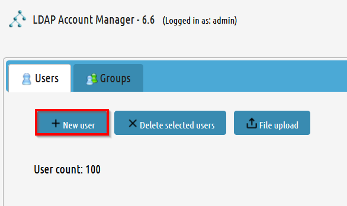
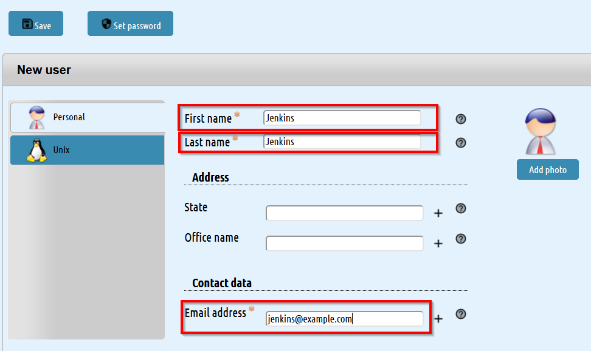
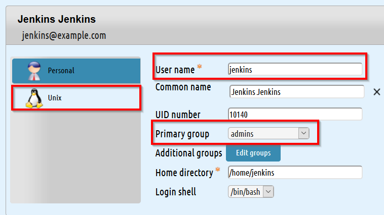
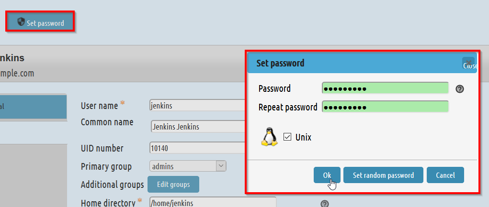
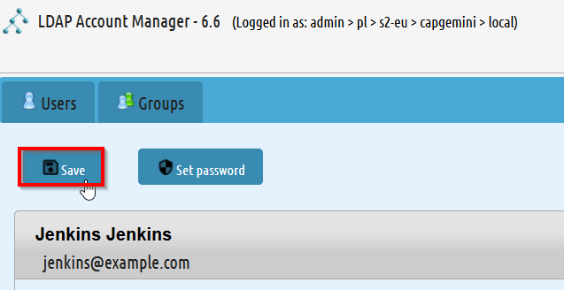
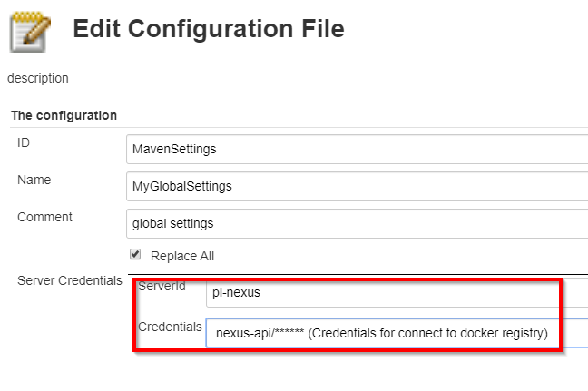

Introduction
Production Line Templates allows you to create/configure certain task. In order to work properly, Production Line Templates needs some previous configurations. You can do it manually or executing the Initialize Instance Template.
Prerequisites
In order to be able to start this template, you need:
-
The Production Line Shared Lib added in Jenkins
-
The following plugins:
-
A service account added in the LAM
Production Line provides by default the Shared Lib and the plugins, so no actions are required. The only thing that you need to do manually is the creation of the service account.
In order to create the service account you need:
-
Open the LAM
-
Press the
New Userbutton -
Enter the required parameters
 -
Change to
Unixtab and enter the required parametersThe user name will be used later in order to login. As this user will do some configuration changes, its primary group must be admins.
-
Set a password for the user.
 -
Press the
Savebutton
Template
In order to execute this template, you need to add it into Jenkins manually. In order to do that, you can follow this guide
Parameters
The required parameters are:
-
svcaccount: The service account created as prerequisite. It must be added as a Jenkins credential. -
installDeploymentPlugins: With this parameter you can install extra plugins into Jenkins. Also, you can add extra template utils.
Execution
-
Press the Build with Parameters button
-
Insert the parameters.
-
If the service account is not added as credential, please add a new entry.
-
Press the
Buildbutton. -
Wait until the pipeline ends.
| if any plugin is installed, Jenkins will be restarted and the pipeline will fail. You need to execute it again with the same parameters. |
The result
-
Install plugins stage
In this stage the following plugins will be installed:
-
If
installDeploymentPluginsisDockerorDocker+Openshift, extra plugins will be installed: -
If
installDeploymentPluginsisOpenshiftorDocker+Openshift, extra plugins will be installed:
-
Configure SonarQube stage
This stage is the responsible of configure the Jenkins-SonarQube integration. It will:
-
Generate a SonarQube API token for the user
Admin -
Register the token in Jenkins as credential with the id
sonar-token -
Add the SonarQube server in Jenkins → Manage Jenkins → Configure System → SonarQube servers. The values used are:
-
Name:
SonarQube -
Server URL: http://sonarqube-core:9000/sonarqube (default Production Line SonarQube URL)
-
Server authentication token:
sonar-token(generated in the previous step)
-
-
Add a webhook in SonarQube:
-
Name:
jenkins
-
-
Install the following SonarQube plugins:
-
java
-
javascript
-
typescript
-
csharp
-
web
-
cssfamily
-
jacoco
-
checkstyle
-
cobertura
-
smells
-
findbugs
-
scmgit
-
ansible
-
sonar-dependency-check-plugin
-
-
Restart the SonarQube server in order to enable the plugins installed.
-
-
Create UTIL templates stage
Some templates needs that Jenkins has installed some plugins. If the plugins are not installed, the template will fail. In order to prevent this behaviour, we use the
initialize-instanceto install all plugins required in order templates. Then, we create another templates that will use the plugins installed byinitialize-instance. In this stage we create some template utils to configure Jenkins after all required plugins are installed. Those templates are:-
If
installDeploymentPluginsisDockerorDocker+Openshift: Docker_Configuration -
If
installDeploymentPluginsisOpenshiftorDocker+Openshift: Openshift_Configuration
-
Configure Nexus 3 stage
This stage will configure the Production Line Nexus3
-
Enable anonymous access
-
Add a internal user to download/upload docker images
-
username:
nexus-api -
password: The same as the service account created in LAM
-
-
Create the maven repositories: maven-central, maven-snapshots, maven-release, maven-plugin
-
Create the docker repository
-
Create the npmjs repositories: npmjs, npm-registry, npm
-
Create in Jenkins a new credential with the id
nexus-apiwith the username and password created in nexus3
-
-
Configure Maven File stage
This stage adds the nexus3 credentials created in the previous stage to the maven global configuration file with the id
pl-nexus
Now, you are able to execute other templates adding them manually or using the Production Line Market Place.